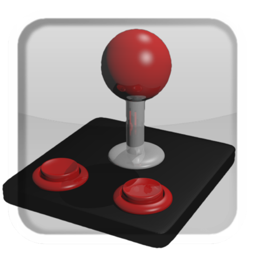

USB BT Joystick Center 6
USB BT Joystick Center
for use with USB BT Joystick Center and Joy2Touch Server .
Edition 1

Abstract
This guide will help you initially set up USB BT Joystick Center on your Android device. After initially setting up the product, further instructions about configuring the product are discussed in detail.
Table of Contents
Chapter 1. Introduction
Thank you for purchasing USB BT Joystick Center. Your support is greatly appreciated.
If this is your first time using the application, read Chapter 2, Quick Start, Chapter 3, Main Screen and Chapter 4, Connect a Controller to familiarize yourself with the interface, and learn how to configure the application to work with your emulator or game.
If you need help with configuring a touchscreen game to work with a joystick, keyboard or mouse, read up to Section 5.3, “On-screen Controller Support” and then refer to the Joy2Touch Server user guide.
For detailed video tutorials about setting up controllers using USB BT Joystick Center and Joy2Touch Server, follow poke64738's YouTube Channel. If a tutorial for your device in not on this YouTube Channel, search YouTube for "USB/BT Joystick Center 6 and
[name of joystick]" and you should find what you are looking for.
If you are having issues with getting your Android device to work with the application, read Chapter 6, Frequently Asked Questions About Phones and Tablets.
If you are having issues with getting your controller working, read Chapter 7, Frequently Asked Questions About Controllers.
Chapter 2. Quick Start
Using USB BT Joystick Center to play games on your phone or tablet is designed to be as easy as possible.
The basic work flow is:
- Start USB BT Joystick Center.
- Tap the IME slider to select USBJoyIME as the input method.
- If this is the first time you have used USB BT Joystick Center, authorize it as a valid input method in the Android Settings.
- Plug in a USB joystick or keyboard/mouse, or tap the BT slider to activate Bluetooth.
- If your controller is a Bluetooth controller, activate pairing mode on the controller.
Note
If your controller is not a pairless Bluetooth device (for example, iCade), detect and pair the controller using the Bluetooth settings on your device. - Tap in the Main Screen if the controller is not already detected. For keyboards, follow the steps in Section 7.4, “Keyboard Questions”.
- Once the controller is detected, tap the controller icon.
- The controller is now the input method for the Android device.You can now begin mapping buttons to game controls.
- To conserve battery power, do not leave USB BT Joystick Center running between gaming sessions. Always turn off the application by tapping the slider and selecting the preferred virtual keyboard on your device.
Note
Tapping the IME slider will automatically shut down Joy2Touch Server, and close the application.If Bluetooth is activated, this service will not be turned off by closing the application. Tap the slider to manually turn off Bluetooth before tapping the slider.
These instructions may be enough for some users to begin using a controller with the application. If you have difficulty connecting a controller or using it in-game, refer to Chapter 4, Connect a Controller and Chapter 5, Map buttons for further assistance.
Chapter 3. Main Screen
When you start the application for the first time, the main screen is displayed.

The following buttons and sliders are used to activate different modes in USB BT Joystick Center
- IME
- Tap this slider to select USBJoyIME. This is the name for USB BT Joystick Center registered in the Android Input Select settings. If this slider is not set to On (yellow), you can not use joysticks, game pads, or keyboards with the game.
- BT
- Tap this slider to activate Bluetooth within the application so you can pair controllers such as Wii remotes for use. If Bluetooth is not already activated on your device, tapping this slider will turn on Bluetooth, and activate the Bluetooth service in USB BT Joystick Center.
- A
- Tap this slider to activate AnalogKey mode for MUPEN64Plus AE and FPSe emulators. If you are not using either of these emulators, then do not activate this slider.
Note
Ensure you map the analog stick to the Analog-Key in the settings of these emulators. Once the stick is mapped correctly, you can control characters using the analog method, rather than the digital D-pad. - J>T
- Tap this slider to activate the Joy2Touch Server. This application allows touch screen events to be mapped to controller button presses, or keyboard and mouse actions.For more information about Joy2Touch Server, refer to Section 5.3, “On-screen Controller Support”.
- SEARCH
- Tap this button to begin searching for USB and Bluetooth controllers, which have been plugged into the device, or set to Bluetooth discover/pairing mode.
Chapter 4. Connect a Controller
Note
If you prefer to learn by watching rather than reading, take a look at the YouTube channel discussed in Chapter 1, Introduction.
Procedure 4.1. Configuring Input Methods
Before using USB BT Joystick Center to control an application for the first time, you need to authorize the application as a valid input method (IME).
Follow these steps to authorize USB BT Joystick Center as an input method on the device.
- Tap the slider to open the Android Language and Input settings.
- In the Keyboard & Input Methods group, tap the USBJoyIME checkbox.
- In the Attention dialog box, read and accept the warning and tap .
- Exit the Android Language and Input settings screen.USB BT Joystick Center is now configured as an IME
Procedure 4.2. Select Input Method
- Tap the Button to open the Input Method menu.
- Select USBJoyIME to set USB BT Joystick Center as the input method, until the application is closed.
Note
Once this setting is activated, you will not be able to use other input methods, such as on-screen keyboards.
Procedure 4.3. Connect USB Device
Follow this procedure to connect a USB device and detect it using USB BT Joystick Center
- Plug the cable into the device.
- Tap to detect the device.
- The controller is detected, and it's name is displayed as a button in the main screen.
Procedure 4.4. Connect Bluetooth Device
Follow this procedure to pair and detect a Bluetooth controller with USB BT Joystick Center.
- Tap the slider to turn on Bluetooth.
- Tap on the Bluetooth permission request menu to activate Bluetooth on the device.
- On the controller, activate Bluetooth pairing mode.
- In USB BT Joystick Center, tap SEARCH.
- The controller is detected, and it's name is displayed as a button in the main screen.
Note
If you are having problems detecting the controller, refer to Chapter 7, Frequently Asked Questions About Controllers for help with troubleshooting.
Chapter 5. Map buttons
How you map buttons in USB BT Joystick Center depends on whether the game or application features support for physical controllers (instead of touch screen controls), or whether the game or application is touchscreen only (on-screen controllers).
5.1. Save Time: Import and Export Controller Maps
USB BT Joystick Center allows one controller map to be loaded for each detected controller type. So what happens when you want to play different games with different button maps on your device with the same controller?
Importing and Exporting maps is the key to using USB BT Joystick Center with multiple games.
Before you invest the time in creating a custom map, explore the pre-configured controller maps in the
/sdcard/USBJoyData folder of your Android device. Import these files into the application by following Procedure 5.1, “Import Shipped Controller Maps”.
Search the internet for sites that offer pre-configured controller maps compatible with your game, and import these by following Procedure 5.2, “Import Shared Controller Maps”.
Once you have configured the controller map to your liking, consider sharing back to the community so others can benefit from your effort by following Procedure 5.3, “Export Controller Maps”.
Procedure 5.1. Import Shipped Controller Maps
- Connect a controller by following the steps in Chapter 4, Connect a Controller.
- Once the controller is detected, tap the controller tile on the main screen.
- Tap the button to display a list of available controller maps.
- Tap the controller map tile you want to load.The current controller map is overwritten with the data from the imported controller map.
Procedure 5.2. Import Shared Controller Maps
- Save the USB BT Joystick Center controller map XML file obtained from a friend to
/sdcard/USBJoyData. - Connect a controller by following the steps in Chapter 4, Connect a Controller.
- Once the controller is detected, tap the controller tile on the main screen.
- Tap the button to display a list of available controller maps.
- Tap the controller map tile you want to load.The current controller map is overwritten with the data from the imported controller map.
JoyPrefsFile Extension is Critically Important
Do not ever delete the JoyPrefsFile string that USB BT Joystick Center automatically appends to the end of an exported controller map file name.
The application classes files with this extension as valid, custom controller maps, and uses the numbers in the file name to allocate the map to the correct controller hardware .
If you decide to change the exported file name by renaming your controller map without the JoyPrefsFile string, the application will not detect the file as a valid map.
Custom controller maps always have the
_0.xml number at the end. All other controller maps with _1.xml and higher are factory shipped controller maps.
Procedure 5.3. Export Controller Maps
- Connect a controller by following the steps in Chapter 4, Connect a Controller.
- Once the controller is detected, tap the controller tile on the main screen.
- Tap the button to specify a name and location to save the file. The default, and recommended, location is
/sdcard/USBJoyData. - To ensure the exported controller map is displayed when you next import, prefix the filename with the controller type.For example
Wii-[controller-type]-[game_name].xml - Tap to export the controller map to the specified location.
5.2. Physical Controller Support
Games that feature physical controller support are almost "plug and play" with USB BT Joystick Center. All you should need to do is map the physical controller keys to the virtual keys on your joystick.
If you load a pre-configured map file, most of the primary buttons should be mapped for you. If some buttons are not mapped to your liking, follow Procedure 5.4, “Mapping and Testing Physical Controller Keys”
Procedure 5.4. Mapping and Testing Physical Controller Keys
- Connect a controller by following the steps in Chapter 4, Connect a Controller.
- Once the controller is detected, tap the controller tile on the main screen.
- To check how a key is mapped, press and hold the key on the controller.The pressed key is displayed in the key map.
- If the mapping is not correct, tap the virtual key on the screen, then press a different controller button to assign that button to the virtual key.
- Once you are happy with the new button layout, tap the Back button (not button) on your device to enable Game Mode.
- Start the game, and configure the keyboard input in the game settings.
- Play the game, and test that the controller map works correctly.
- Export the controller map by following Procedure 5.3, “Export Controller Maps” to ensure you do not lose the configuration when playing another game.
5.3. On-screen Controller Support
Many applications on touchscreen devices use a virtual keyboard or virtual D-pad and buttons to control the game. Some games have no visible buttons, however there are regions on the screen that activate certain game features.
To use these applications with USB BT Joystick Center, you need to install Joy2Touch Server.
The application can be obtained initially by tapping the slider, which prompts you to select an application to open the link with. If you select Google Play, you will be taken directly to the download page for Joy2Touch Server.
For an excellent demonstration of Joy2Touch Server working with Farsight Studio's The Pinball Arcade, refer to this Green Robot Gamer YouTube tutorial. The Pinball Arcade uses touch screen regions to control flippers and other table-specific controls, and the tutorial is a good example of configuring on-screen controller support for other games.
For detailed instructions specific to Joy2Touch Server, refer to the Joy2Touch Server User Guide embedded into the application.
5.4. Keyboard and Mouse Support
Keyboard and Mouse support is similar to on-screen controller support. Joy2Touch Server is required to map touchscreen events triggered by the mouse to the buttons. The mouse movement must also be mapped as a "finger touch" event.
For detailed Keyboard and Mouse instructions specific to Joy2Touch Server, refer to the Joy2Touch Server User Guide embedded into the application.
Chapter 6. Frequently Asked Questions About Phones and Tablets
6.1. General Questions
Q:
How can I test whether USB BT Joystick Center will work on my device.
A:
Download the USB/BT Joystick Center Test App
Q:
How do I solve the "Memory Crash: Out of Memory" error.
A:
This is caused by an issue in a system file used by USB BT Joystick Center. This affects Samsung handsets mostly, however other handsets may be affected.
- Your device needs to be rooted.
- Using the Root Explorer application (download from Google Play), navigate to the
/system/data/appfolder. - Locate the file named similar to
com.poke64738.usbjoy-1.odex. The important info in the file you need to locate are the words "usbjoy" and "odex". - Delete this file.
- Reinstall USB BT Joystick Center from Google Play.
Q:
How do I add USB Host API support to my device.
A:
These instructions are generic. Your Android device must be rooted to complete these steps.
- Install a custom ROM compatible with your device that includes support for the USB Host API. Read the XDA Forum ROM page for clues to whether the ROM contains this component.
- Download Root Browser from Google Play.
- Navigate to the
/system/etc/permission/directory. - Create a file named
android.hardware.usb.host.xml. - Paste the following text into the file.
<?xml version="1.0" encoding="utf-8"?> <!-- Copyright (C) 2011 The Android Open Source Project Licensed under the Apache License, Version 2.0 (the "License"); you may not use this file except in compliance with the License. You may obtain a copy of the License at http://www.apache.org/licenses/LICENSE-2.0 Unless required by applicable law or agreed to in writing, software distributed under the License is distributed on an "AS IS" BASIS, WITHOUT WARRANTIES OR CONDITIONS OF ANY KIND, either express or implied. See the License for the specific language governing permissions and limitations under the License. --> <!-- This is the standard feature indicating that the device can communicate with USB devices as the USB host. --> <permissions> <feature name="android.hardware.usb.host" /> </permissions>
- Reboot device to load the configuration file, and activate USB Host Support.
6.2. HTC Questions
Q:
Why can't I use the Wii Controller with the HTC One X
A:
This is unfortunately a known hardware issue with newer Samsung and HTC devices.
These devices do not include the full Bluetooth protocol stack, therefore USB BT Joystick Center is unable to pair the Wii Controller using "pairless" mode (where you do not need to supply the pairing pin).
The only way to use Bluetooth controllers on these affected handsets is to install a custom ROM, such as CyanogenMod, or choose a controller that is known to work with USB BT Joystick Center.
Q:
What controllers can I use for sure with the HTC One X
A:
The iControlpad and PhoneJoy are working correctly for stock ROM users. You must Bluetooth pair these devices before starting USB BT Joystick Center. The pairing pin for both controllers is 1234 at time of writing..
6.3. Nexus Questions
Q:
I have no touch mapping test mode in Joystick2Touch, and there is no response in-game
A:
To fix this issue, you need to touch the Joystick2Touch icon in the task list once you are in the game you want to play. This is a peculiarity of this device.
6.4. Samsung Questions
Q:
Why can't I use the Wii Controller with the Samsung Galaxy S 3 (SGS3), and other new model Samsung handsets.
A:
This is unfortunately a known hardware issue with newer Samsung and HTC devices.
These devices do not include the full Bluetooth protocol stack, therefore USB BT Joystick Center is unable to pair the Wii Controller using "pairless" mode (where you do not need to supply the pairing pin).
The only way to use Bluetooth controllers on these affected handsets is to install a custom ROM, such as CyanogenMod, or choose a controller that is known to work with USB BT Joystick Center.
Q:
What controllers can I use for sure with the Samsung Galaxy S 3 (SGS3)
A:
The iControlpad and PhoneJoy are working correctly for stock ROM users. You must Bluetooth pair these devices before starting USB BT Joystick Center. The pairing pin for both controllers is 1234 at time of writing.
Q:
I can not get my Samsung device to recognize my USB controller.
A:
If you want to use USB devices with your Galaxy Tab or other Samsung devices, you have to use the OTG Connection Kit. For example, http://www.ebay.com/sch/i.html?_nkw=usb+adapter+connection+kit+samsung&clk_rvr_id=407743970573.
Understand that Samsung devices and USB controllers are unreliable because support for USB OTG support varies between ROMs. If in doubt, test the controller using the USB Test App.
6.5. XPeria Play Questions
Q:
I'm looking for a quick tutorial on how to set up USB BT Joystick Center on the XPeria Play. What is a recommended tutorial?
A:
Visit http://www.xperiagamer.com/PLAY-Apps-Tweaks/usb-bt-joystick-center-6.html for an excellent tutorial.
Q:
Why is the analog touch pad not working?
A:
A function of the XPeria Play is to lock the touch pad if the device is booted with the slider in the open position. To fix the issue, close the slider, and restart the device. USB BT Joystick Center should behave as expected.
You must also enable the slider for the touch pad to operate correctly.
Chapter 7. Frequently Asked Questions About Controllers
7.1. General Controller Questions
Q:
When I try to connect my USB controller to USB BT Joystick Center, it is never found. What can I do to fix this?
A:
It is possible that your controller's ProductID is not registered. To remedy this, you need to add the VendorID and ProductID of the controller manually to
/sdcard/UsbJoyData/usb_device_ids.txt. USB BT Joystick Center v6.43 and higher supports this function.
- Download the USB Joystick Analyzer Zip from the Help Forum.
- Install the
AndroidUSBJoystickAnalyzer.apkto your device, and open the application. - Connect the USB controller to your device and using the application, search for the controller.
- When your controller is detected by the application, note down the four-digit VendorID and ProductID.
- Open
/sdcard/UsbJoyData/usb_device_ids.txt. Read the information at the top of the file to understand how to format the text inside (the formatting is important). - Search for the VendorID number in the file to ensure the new entry is grouped and sorted correctly.
Note
It is highly likely that the VendorID is already present in the file, but the Product ID (the specific code given to the missing controller) is not. - Add the new ProductID under the VendorID entry, using the formatting present in the text file (preserving the indents). For example:
057e Nintendo Co., Ltd 0306 Wii Remote Controller RVL-003 xxxx Your New Device Here
- Save and close the file.
- Restart USB BT Joystick Center and tap to detect the controller.
Q:
I am using a version of Android below ICS 4.0.2, and I can not make USB BT Joystick Center detect any USB Joysticks. How do I solve this?
A:
.Unfortunately ICS 4.0.1 and earlier does not have USB API support. If your device has USB Host support, but the manufacturer did not include USB API support, you can not use USB Joysticks with the USB/BT Joystick Center.
Ask the manufacturer for an ICS 4.0.3 update with USB Host API support. Alternatively, try a custom ROM for your device, based on an operating system version higher than 4.0.1.
Alternatively use a Wii Classic Controller. This controller provides a large selection of buttons to map, and because the Wii controller is a "pairless" Bluetooth controller, it has excellent support with minimal Bluetooth stack issues on most devices.
Q:
After exiting out of USB BT Joystick Center, none of the in-game controls work. How do I troubleshoot this?
A:
Did you exit USB BT Joystick Center by tapping the button on your device? If you tapped the button, the "Game Mode" is not activated and the controller mappings will not work.
Have you correctly mapped the required keys for the emulator or game? If you accidentally mapped an incorrect controller scheme to buttons on your controller, the emulator or game will not respond to the button press. Double-check your mapping.
Did you tap the slider and set USBJoyIME as the input method before starting the game?
Q:
I am running a game emulator but none of my mapped keys are working. What can I do to fix this?
A:
Most emulators have IME Support switched off by default. Activate this option in the emulator keyboard settings, and try again.
7.2. iCade Questions
Q:
Where are some tutorials for setting up this controller for MAME
A:
The Green Robot Gamer has a page dedicated to USB BT Joystick Center and Joy2Touch Server, including preset controller maps for popular games and controllers. The controller maps for iCade are compatible with most basic MAME emulated games.
7.3. iControlPad Questions
Q:
I can not connect the ICP to my device
A:
- Correctly pair the ICP using the Bluetooth settings of your device.
- On the ICP, press Y+START to activate the SPP mode.
- Press SEARCH in the USB BT Joystick Center main screen to detect the controller.
Q:
Sometimes the button mapping is wrong.
A:
.THis is caused by the ICP occasionally sending an incorrect first byte in the data stream. To correct the issue, disconnect (unpair) the ICP and reconnect. This issue will hopefully be reduced by iControl code optimization implemented in v6.0 of USB BT Joystick Center.
7.4. Keyboard Questions
Q:
I keep tapping SEARCH when my keyboard is connected, but no matter what I do, I can not seem to get my keyboard dock, USB or Bluetooth keyboard to be detected in USB BT Joystick Center. What do I need to do?
A:
Keyboards can not be detected using the button. To detect keyboards, you need to first enable the slider and while the menu is displayed, press Spacebar on the keyboard. This sequence activates search mode for keyboards.
7.5. PhoneJoy Questions
Q:
Where are some tutorials for setting up this controller?
A:
The official website has a screen-by-screen tutorial. View it at http://www.phonejoy.us/support/getting-started/android/usbbt-joystick-center/ .
Q:
Why are the analog pads not working on the PhoneJoy controller?
A:
You must enable the analog pads on the controller first, by pressing the "Analog" button on the PhoneJoy joystick. You have activated Analog mode successfully when the LED indicator is lit.
7.6. PS3 Sixaxis Questions
Q:
I have a "third party" PS3 Sixaxis controller, but it isn't being detected by USB BT Joystick Center. Why?
A:
Third-party PS3 controllers do not work with USB BT Joystick Center. You must use an original PS3 controller from Sony.
Q:
I have an original PS3 Sixaxis controller made by Sony, but it can not be found by USB BT Joystick Center. What do I need to do to make it work?
A:
You can not use the standard Bluetooth stack in phones and tables with PS3 controllers because of the enhanced data rate it needs to send signals. You need to use a USB Bluetooth Cambridge Silicon Radio (CSR) "2.x/EDR+" Dongle so the PS3 controller has the correct enhanced data rate tunnel. An example of such a dongle is http://dx.com/p/ultra-mini-bluetooth-2-1-edr-usb-2-0-dongle-37665
- Plug in the USB Dongle.
- Press the button in USB BT Joystick Center. The Bluetooth MAC address is stored.
- If you are using a USB hub, plug in the PS3 Controller using a USB cable. Otherwise unplug the USB dongle and plug in the PS3 Controller.
- Tap again to detect the PS3 Controller. The joystick button appears in the main screen.
- Tap the button on the PS3 Joystick button to pair the PS3 Joystick to the USB Dongle MAC address.
- Unplug the PS3 Joystick from the USB hub or device. Ensure the USB Dongle is plugged back into the device.
- Tap again.When the text "Searching for PS3" displays, press the PS button on the PS3 Controller to activate Bluetooth pairing.
The controller should now be paired as a USB joystick.
Q:
So I have followed the instructions above to pair the PS3 controller using a Bluetooth dongle, but it doesn't work.
A:
Have you tried disconnecting and reconnecting the dongle, and trying to search again?
If that fails, you may need to hard reset your PS3 controller using a pin or paper clip to press the reset switch. Once you have reset the controller, repeat the pairing process again.
7.7. Wii Questions
Q:
Where are some tutorials for setting up this controller?
A:
The Green Robot Gamer has a page dedicated to USB BT Joystick Center and Joy2Touch Server, including preset controller maps for popular games and controllers. The controller maps are compatible with the Nintendo Wii Controller and the additional Nintendo Wii Classic Controller.
7.8. XBox360 Questions
Q:
When I try to pair an XBox360 wireless receiver to my device, nothing happens when I tap SEARCH. How can I fix this?
A:
You need to ensure you first pair the X360 Wireless Joystick with the X360 Wireless Receiver.
Once you have done that, tap and move the analog stick of the X360 Wireless Joystick so the wireless receiver detects the controller is "on".
Q:
I have a X360 Wireless Joystick, but I can not pair it with my device. How can I fix this?
A:
X360 controllers, like PS3 Sixaxis controllers, do not work with standard Android Bluetooth stacks, and require a special dongle to work. Purchase the Microsoft USB Wireless Gaming Adapter.
Ensure you first pair the wireless controller with the USB Wireless Gaming Adapter before attempting to pair the controller with USB BT Joystick Center.
Revision History
| Revision History | |||
|---|---|---|---|
| Revision 6.1-2 | Thu Nov 8 2012 | ||
| |||
| Revision 6.1-1 | Mon Nov 5 2012 | ||
| |||